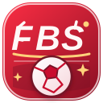

DE FLIKKERBIBSJESUT TRADE WATCHERVOOR DE CLUB. VOOR DE COINS.
Grote praat.
Slimme transfers.
Jullie dagelijkse dosis markt, meta en pack-chaos. Voor vier managers met grootheidswaanzin en één gezamenlijke hersencel.
ROOD-WIT IN HET HART. DE MARKT IN HET VIZIER.
DE BIBS SQUAD
4 man. Nul chill.
- Knalfuifjeconfetti CFO
- Uncle Gerroeraad van toezicht
- Surimi stokjetactisch zeewier
- vleesbekerliquiditeitsminister
HET CLUBHUIS
Even bijpraten.
Bronstatus laden…Bekijk updates +
Verversen haalt de laatste publicatie op. Nieuws en prijsgegevens kunnen ouder zijn; hieronder zie je de brondata per onderdeel.
02 ORANJE BOVEN. GOUD ERONDER.
Nederlandse Gold Watch.
Andere namen, dezelfde ongezonde ambitie. Gold-basiskaarten vanaf 75 ALG, met een eigen scoutingsrapport.
Geen spelers op deze positie in de huidige Gold Watch. De scout is nog niet klaar met z’n broodje.
De goudpaspoort-regel
03 DE DAGELIJKSE MARKETWATCH
Koffie. Koersen. Grote verhalen.
Een journalistieke briefing met bronnen, onzekerheid en nul verzonnen marktprijzen.
COINS OP HET SCHAVOT
Op het transferlijstje.
Alleen echte, toegestane prijsdata krijgt een koopgrens. De rest is groepschat-fanfiction.
GERUCHTEN & PACK-CHAOS
Wat staat er op het punt raar te doen?
Een event is een aanwijzing, geen vrijbrief om je hele clubkas te yeeten.
04 NIEUWS & RELEASES
Woensdag TOTW. Vrijdag pack-chaos.
De vaste kijkmomenten voor nieuwe kaarten, met een bron erbij of helemaal niets.
VASTE CHECKMOMENTEN
Twee avonden, nul chill.
Tijdstip en lineup blijven altijd onder voorbehoud van EA.
NIEUWE KAARTEN
Het bord liegt niet. Wij ook niet.
Een kaart krijgt pas een naam, rating en Meta-tekst zodra de officiële bron ernaast staat.
05 ZONDAGAVOND · SBC WATCH
Must-do SBC van de week?
Alleen een ‘must do’ als EA de requirements en reward officieel heeft neergezet.
KAARTEN ONDER TOEZICHT
Wie doet moeilijk?
De grafiek onthoudt meer dan jullie groepschat: lokale of toegestane snapshots, geen spookdata.
REALITEITSCHECK
Voor je al gaat juichen
DE SAUS
Geen toverspiegel.
- 01
Meet prijs, 24u/7d-trend en liquiditeit. Geen kristallen bol.
- 02
Check pack supply, SBC’s en officiële events. De chaos heeft context nodig.
- 03
Reken tax, marge en risico. Eerst cijfers, dan bravoure.